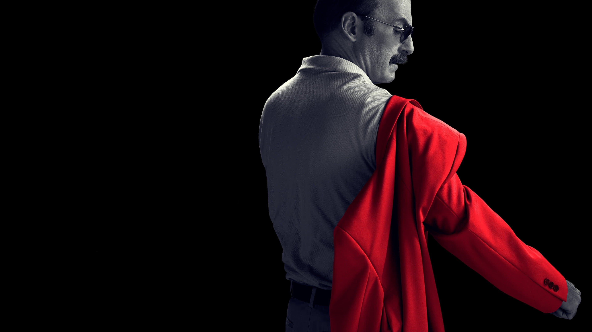
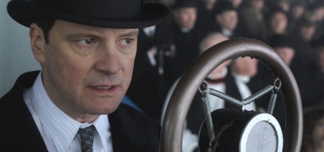

Galería
|


Optimización, creatividad y estrategia
Nací el 28 de julio de 2006 en San Salvador, El Salvador. Desde pequeño fui una persona bastante activa, con mucha energía y, como suele pasar, algo gordito. Mi madre, siempre buscando lo mejor para mí, me inscribió en clases de fútbol cuando tenía entre 10 y 11 años. Ese fue un punto de inflexión: el deporte no solo me ayudó físicamente, sino que también me enseñó disciplina y trabajo en equipo.
Entre los 12 y 14 años viví una etapa muy especial como scout en el Grupo 20 de Santa Tecla. Fueron tres años llenos de campamentos, aventuras y aprendizajes que marcaron mi carácter y fortalecieron mi sentido de comunidad. Aunque eventualmente me retiré, esa experiencia dejó huella.
En 2019 descubrí una nueva pasión: la programación. Empecé por mi cuenta, explorando tutoriales en línea y aprendiendo HTML, CSS y los fundamentos de JavaScript. Siempre me han fascinado los videojuegos, así que el siguiente paso fue natural: adentrarme en el desarrollo de videojuegos. El primer motor que probé fue Unity, y desde entonces ha sido mi herramienta principal. Me ha permitido combinar creatividad con lógica, y construir mundos interactivos desde cero.
En 2023 me gradué del colegio, y en 2024 comencé una nueva etapa académica en la ESEN, estudiando la carrera de Desarrollo de Software. Mi meta es seguir creciendo como desarrollador, crear soluciones que impacten positivamente en la vida de las personas, y eventualmente emprender proyectos propios que mezclen tecnología, diseño y experiencia de usuario.